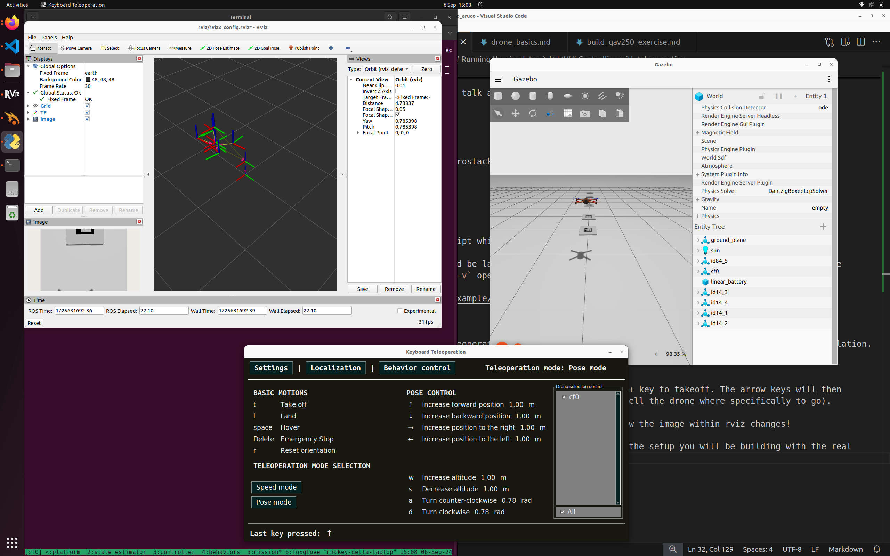

1. Practicals 1 and 2: Foundations: ROS2 with Aerostack2¶
These practicals introduce the core software ecosystem used for aerial robotics development in this course. The focus is on ROS 2 and Aerostack2, a ROS 2–based framework for the control, coordination, and autonomy of single and multiple drone systems.
Practicals 1 and 2 form a foundational block delivered across Weeks 1 and 2. Their purpose is to ensure that all students, regardless of prior experience, reach a common technical baseline before progressing to the assessed coursework challenges.
You are not expected to be an expert in these tools at the outset. Instead, the emphasis is on: - Understanding how the software components fit together - Becoming comfortable navigating and modifying an existing aerial robotics software stack - Establishing a reliable development environment for the remainder of the module
Completion of these practicals is required in order to engage fully with the subsequent challenges. Please ensure you show your progress to the course leaders and tutors. We will be recording a checklist to ensure progress and the level of support required.
1.1 Structure of Practicals 1 & 2:¶
These practicals are split into a series of guided pages. Depending on your background, you may progress through them at different speeds or skip sections where you already feel confident.
You are expected to: - Complete the tasks individually - Work through the associated checklist - Demonstrate your completed setup and progress to a course tutor, who will log your completion
- Linux Installation
- For students who do not yet have a working Ubuntu 22.04 installation, or who would benefit from a refresher on Linux basics.
- Covers essential command-line usage and system navigation required for the rest of the course.
- ROS2 Installation
- For students who have not previously installed or used ROS 2 Humble.
- Introduces core ROS 2 concepts and provides installation guidance for different platforms.
- Aerostack2
- Introduces the Aerostack2 framework for aerial robotics.
- Explains the system architecture and how Aerostack2 builds on top of ROS 2 to support drone autonomy, mission execution, and multi-agent coordination.
- This framework will be used throughout the remainder of the course.
- Gazebo Aruco Mini-Challenge
- A short, hands-on challenge that brings together ROS 2, Aerostack2, and simulation.
- You will implement a simple solution within Aerostack2 to solve a perception-driven task in Gazebo.
- This serves as a first end-to-end example of an aerial robotics workflow.
- The aim is to complete this challenge by the end of week 2.
